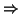
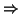

Suppose we have a Formal Language. That is to say, we have an Alphabet A
and a certain subset
L  A*. How do we set about defining
L? There are many approaches to this but one has become very standard
in recent years, particularly in computer science. This approach is due
to the well-known linguistic theorist Noam Chomsky (1959). He
developed this approach in studying `natural' languages, but it has
since been taken over in a big way to describe computer languages.
Chomsky's basic idea was to think of grammars as describing various
possible transformations that can be performed on the sentences
of a language. The application of chains of these transformations should
be able to `generate' all the sentences of the language, even though the
list of transformations is itself finite. These transformations form the
`deep-structure' of the language.
A*. How do we set about defining
L? There are many approaches to this but one has become very standard
in recent years, particularly in computer science. This approach is due
to the well-known linguistic theorist Noam Chomsky (1959). He
developed this approach in studying `natural' languages, but it has
since been taken over in a big way to describe computer languages.
Chomsky's basic idea was to think of grammars as describing various
possible transformations that can be performed on the sentences
of a language. The application of chains of these transformations should
be able to `generate' all the sentences of the language, even though the
list of transformations is itself finite. These transformations form the
`deep-structure' of the language.
To present a very trivial example, the basic notion is the sentence. The abstract object called a sentence can be transformed into the list (subject) (verb) (object). The abstract object called a subject can be transformed into the list (article) (noun). The items of this list can than be transformed into the concrete items: (the)(cat). This type of process gives us the following `generative structure' of the sentence the cat ate the banana which is illustrated in Fig 4.1.
Let me now define what I mean by a Formal Grammar (or transformational grammar, or Chomsky grammar).
This needs some explaining. The alphabet A is something that we have already met (the set of words in English, for example). The abstract alphabet consists of those abstract objects like sentence, noun and adjectival phrase that occur in the partial transformation of a sentence. The initial symbol is the starting point for our transformations. In our example of English the initial symbol is sentence.
The Productions are the transformational rules, like
Notice that our general definition allows mixtures of both concrete and abstract symbols on both sides of , though there must be some abstracts on the left-hand side.
The Formal Language defined by a Formal Grammar is just the set of all strings in A* that can be derived by using these productions (over and over again).
Let me use the notation
 
  to mean that the
string
to mean that the
string

 (A )* can be derived, using the rules or
productions of the formal grammar from the string
(A )* can be derived, using the rules or
productions of the formal grammar from the string  .
.
At this point I had better say goodbye to English and all other natural languages because their grammars are hugely complicated4.1 and not fully understood. I will stick to the much simpler grammars that might occur in computer languages.